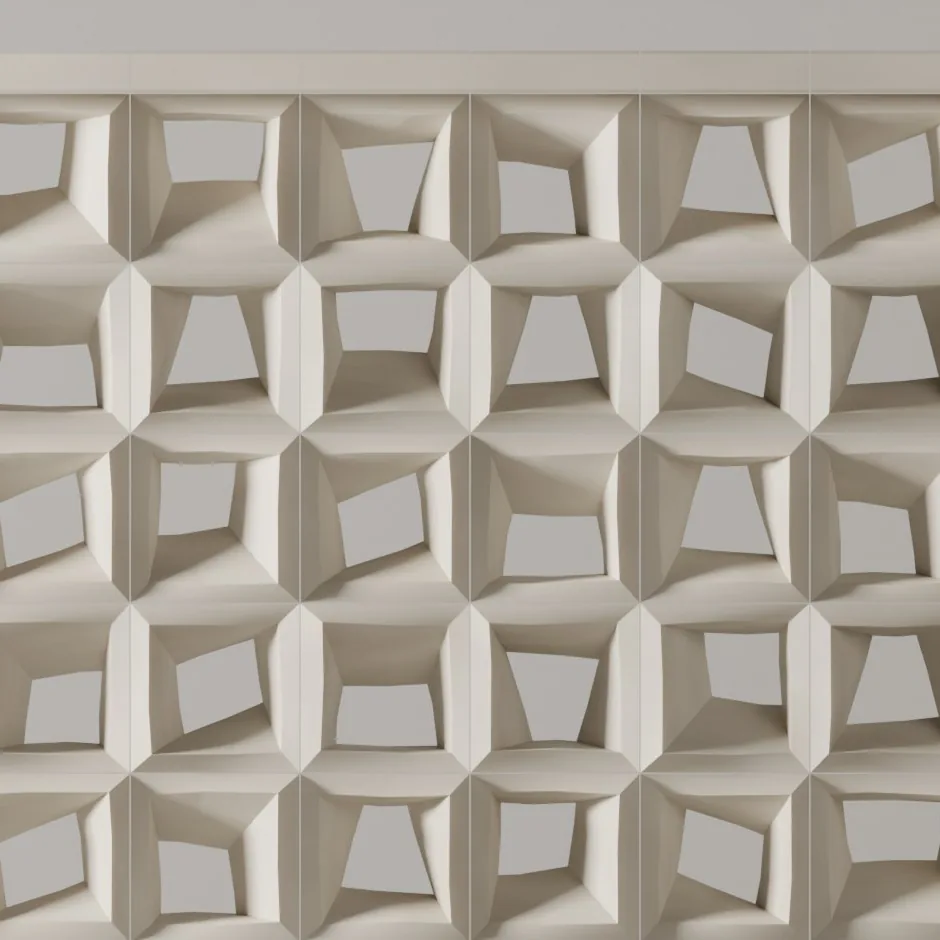
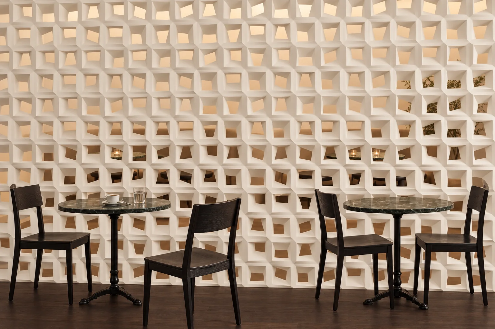
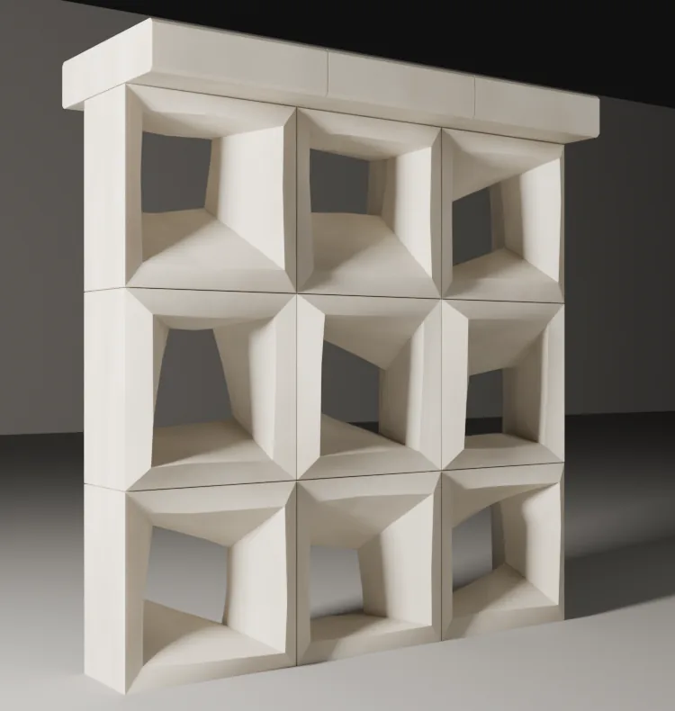
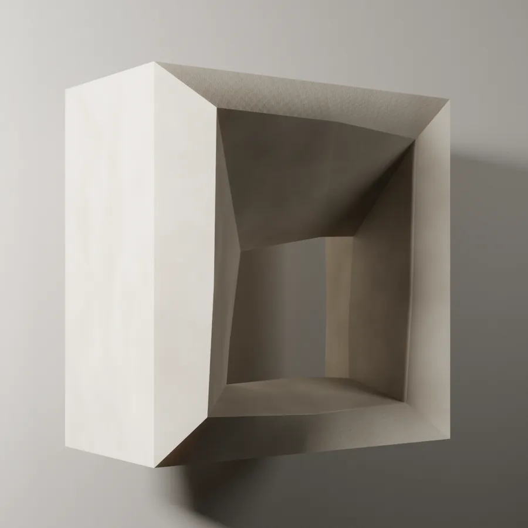
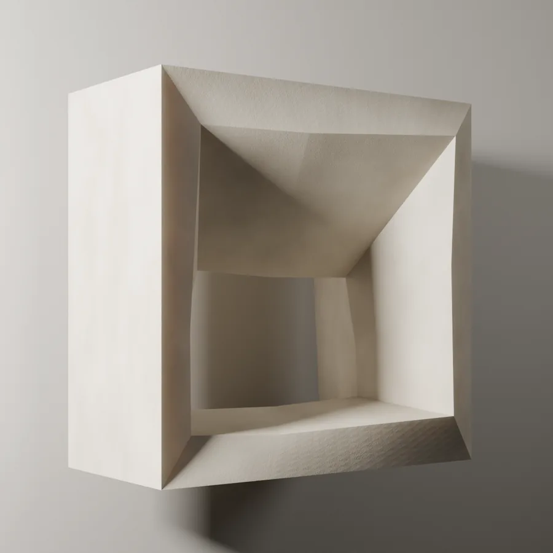
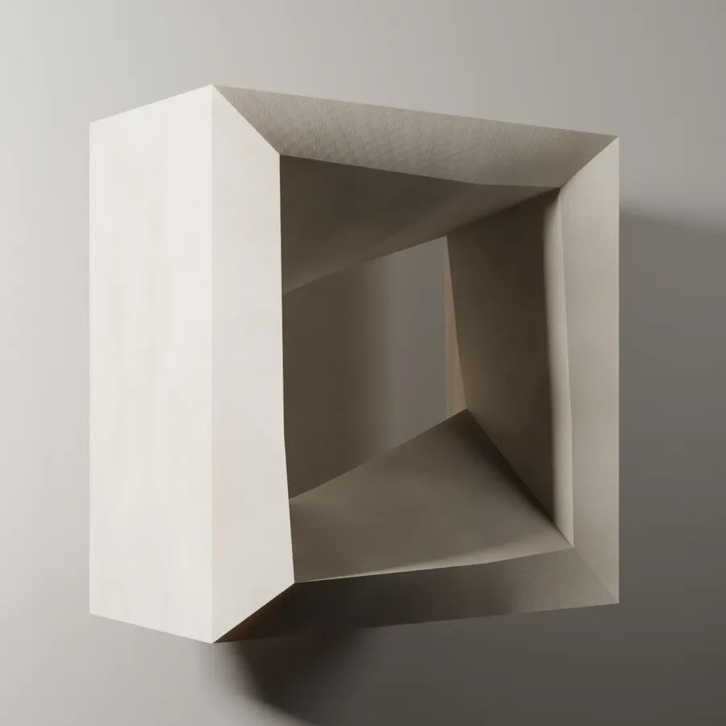
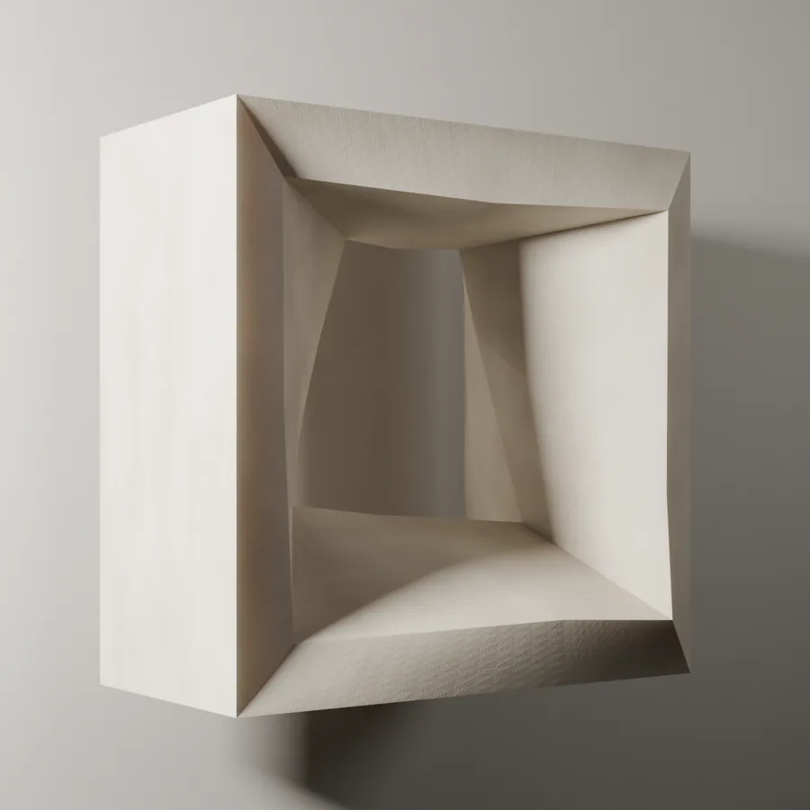
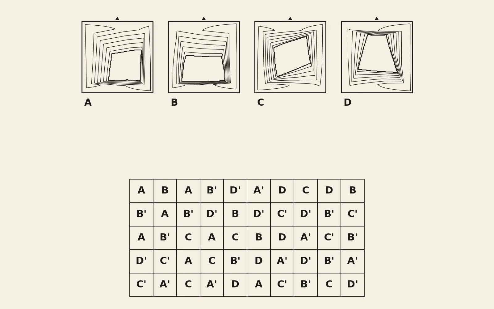
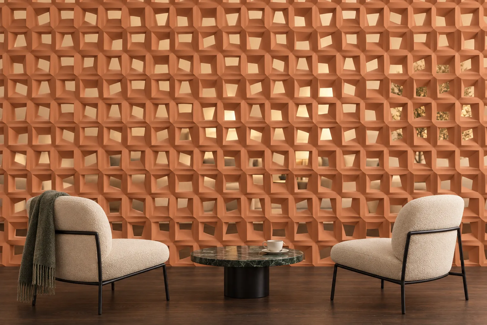
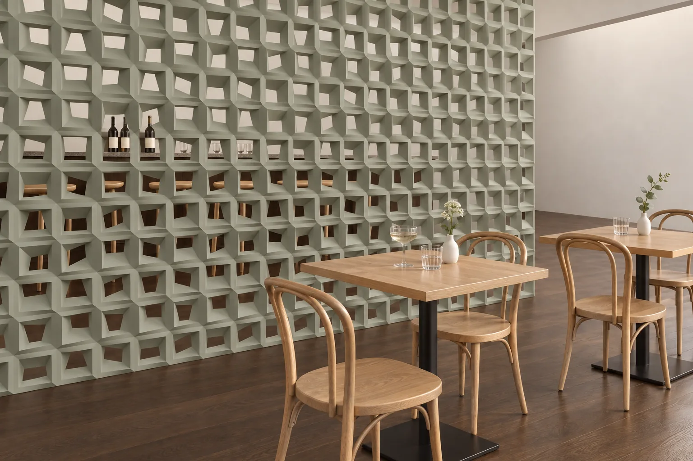

Hemiola
Her biri eğik bir açıklık taşıyan bloklardan, elle dizilmiş gibi okunan bir duvar çizdik.



Yakından
Aynı duvar, yakından: rölyefin derinliği.
- Ölçü
- 200 × 200 mm (blok)
- Malzeme
- Lumina PMAG™ (polimer modifiye kompozit alçı)
- Yüzey
- Boyaya hazır ya da artizan finish ile
- Montaj
- Her proje için montaj çiziminde belirlenir
- Teslim
- Sözleşme ve peşinattan sonra 4 hafta (50 m²’ye kadar), Sapanca’da fabrika teslimi (EXW)
- Minimum sipariş
- 5 m²
- Derz
- 1,5 mm
Kalıplar
Duvar, bu kalıplardan dökülen parçalarla kurulur; harfler çizimdeki dizilişle eşleşir, düz parça rölyefsizdir.




Çizim
Tasarımın kalıpları ve duvardaki dizilişi. Kalıp siparişinizle hazırlanır; dökümden önce ana modeli siz onaylarsınız.

Bir mekânda


Nerede kullanılır
Hemiola, her biri eğik bir açıklık taşıyan bloklardan kurulur ve elle örülmüş bir duvar gibi okunur; bloklar arasında 1,5 mm’lik bir derz kalır. Sayfadaki render’larda tasarım iki yerde görünür: bir lobide oturma grubunun arkasında yükselen bir duvar olarak ve bir restoranda yemek alanıyla barın arasında. Rölyef yandan gelen ışıkta belirginleşir, dik ışıkta sakinleşir. Lobide böyle bir duvar için önce hangi kararların verilmesi gerektiğini lobi duvar kaplama rehberinde sıraladık. Parçalar boyaya hazır ya da artizan finish ile teslim edilir; boyaya hazır yüzey, yerinde mekânın rengine boyanabilir.
Sık sorulan sorular
Hemiola hangi parçalardan oluşur, duvara nasıl dizilir?
Duvar, dört kalıptan (A, B, C ve D) dökülen bloklarla kurulur ve bloklar arasında 1,5 mm’lik bir derz bırakılır. Kalıpların harfleri, sayfadaki çizimde her bloğun duvardaki yerini gösterir. Duvarınızın ölçülerini iletirseniz, Hemiola’nın o duvara nasıl yerleşeceğini bir yerleşim çiziminde gösteririz; duvarın kenarları, kolon yüzleri ve dış köşeler de bu çizimde çözülür.
Hemiola’nın rölyefi ne kadar derin?
Derinlik, sayfadaki yakın plan render’da görülür. Kalıp, siparişiniz üzerine hazırlanır ve dökümden önce ana modeli siz onaylarsınız; dökülen parçalar bu modelle aynıdır, rölyefin derinliğini de döküm başlamadan modelin üzerinde görürsünüz.
Hemiola ne kadar sürede teslim edilir, duvara nasıl sabitlenir?
Teslim süresi, 50 m²’ye kadar olan siparişlerde sözleşme ve peşinattan sonra 4 haftadır; daha büyük siparişlerde tarih teklifte belirtilir. Teslim şekli Sapanca’da fabrika teslimidir (EXW). Parçalar Lumina PMAG™ — Polimer Modifiye Kompozit Alçı ile elde dökülür ve sabitlenmesi her proje için montaj çiziminde belirlenir. Bir kolonu saran, köşeyi dönen ya da kavisli bir duvarı izleyen parçalar ise aynı motifle Özel Üretim olarak dökülür; böyle bir duvar Özel Üretim takvimini izler. Minimum sipariş 5 m²’dir. Kalıp siparişinizle hazırlanır; dökümden önce ana modeli siz onaylarsınız; ikisi de 4 haftaya dahildir.
Bu tasarımın duvarınızda nasıl yerleşeceğini görmek için duvar ölçülerinizi iletin.
Kolon yüzleri ve dış köşeler yerleşim çiziminde çözülür. Bir kolonu saran, köşeyi dönen ya da kavisli bir duvarı izleyen parçalar, aynı motifle Özel Üretim olarak dökülür.